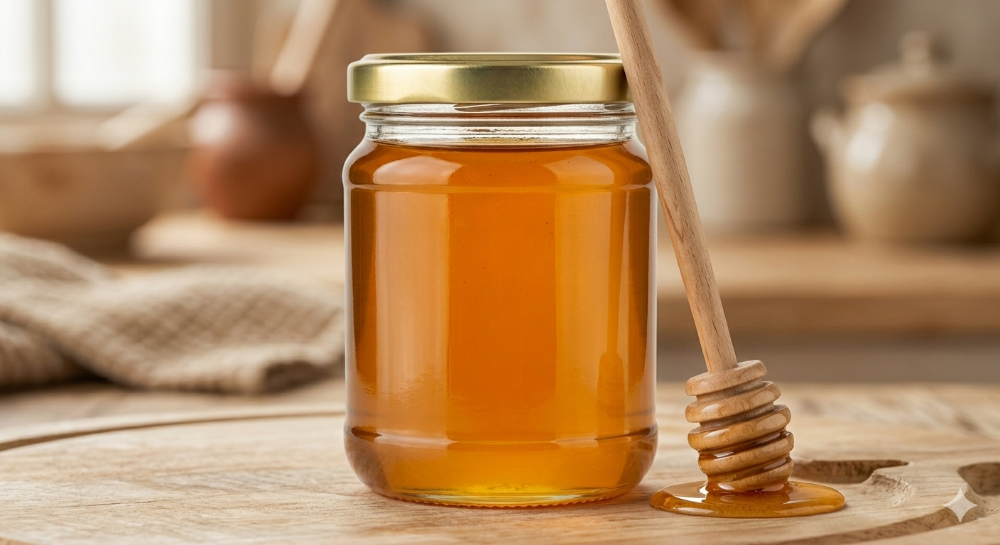

В зависимост от начина на получаване и обработката на пчелния мед се подразделя на центрофугиран и на мед в пи-ти (цяла или част от нея). Първият вид мед се получава чрез центрофугиране на разпечатаните пити, които не са пило, а вторият се предлага заедно с питата (без центрофуги-ране). Главни източници на пчелния мед сa нектар и маната. Те от своята страна произхождат от флоемния (растителния) сок на висшите растения, които циркулират в проводимостта им тук и пренасят хранителните вещества до всички растителни части. Флоемният сок съдържа средно 15-25% \сухо вещество. Основният компонент са въглехидратите, които съставляват до 90% от сухото вещество. Спектърът на захарите зависи от вида на растенията. При някои растения (сем. Fabaceae ви и сем. Coniferae Иглолистни) сокът се състои само от захароза, при други съдържащи освен захароза и олизахариди (рафиноза, вербаскоз и стахиоза), а при трети алкохоли (манит и сорбит). Много рядко флоемният сок съдържа монозахариди (глюкоза и фруктоза). Количеството на захарта се променя не само сезонно, но и денонощно Освен въглехидратите на флоемния сок, съдържащи незначителни количества азотни съединения (протеини, аминокиселини и амиди), органични киселини (лимонен, винена, оксалова, ябълчена, глюконова и др.), нуклеинови киселини, витамини (тиамин, фолиева, пантотенова и никотинова киселина, пиридоксин, рибофлавин, биотин и витамин С) и минерални вещества (калий, натрий, магнезий, фосфор и др.).